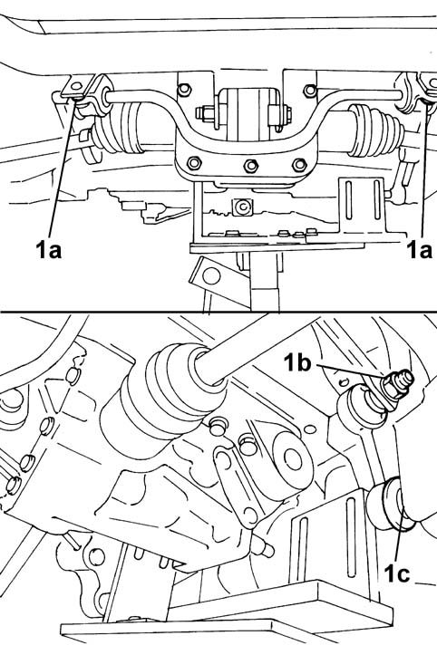

4420CA CHECKS ON ANTI-ROLL BAR
- Path
- Test > 44 SUSPENSION AND WHEELS > 4420 REAR SUSPENSION > 4420C REAR SUSPENSION STABILIZER BAR/LINKS > 4420CA CHECKS ON ANTI-ROLL BAR
- Kind
- test / check procedure
- Applies to
- engines: 1.2 8v; all production periods; only with equipment: 4x4
- Interactive page
- https://sloeber94.github.io/elrnDB-fPnd/en/#/169001082
Applies to: engines: 1.2 8v; all production periods; only with equipment: 4x4
- Position the vehicle on a two column lift.
- Raise the vehicle and check that the anti-roll bar is correctly positioned (transversely) in relation to the centre line.
- Check that there is no wear of the paint at the contact points between the bar and the chassis.
1. Check, using a torque wrench calibrated to the recommended figure, that the bolts fixing the anti-roll bar to the chassis (1a), the connecting rod to the bar (1b) and the connecting rod to the arm (1c) are tightened to the torque figure given below.
Fastening | Component | Diameter | Value (daNm) | |
|---|---|---|---|---|
1a | Bolt | Chassis | M8 | 3,5 |
1b | Nut | Anti-roll bar | M10 | 5,5 |
1c | Nut | Track control arm | M10 | 5,5 |
